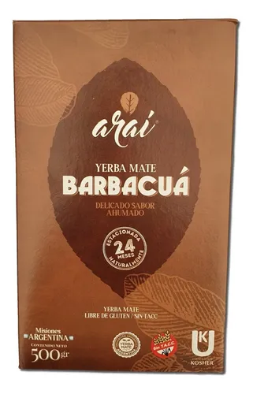
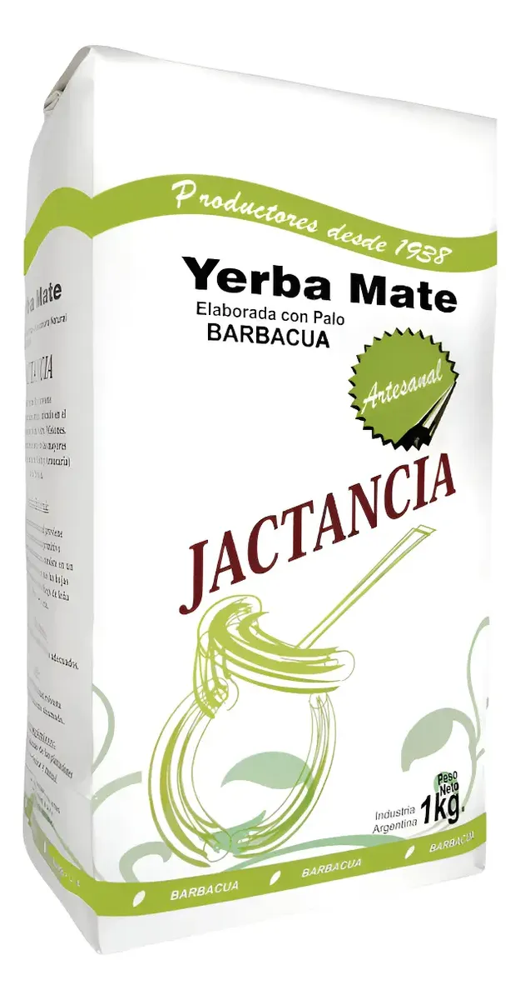
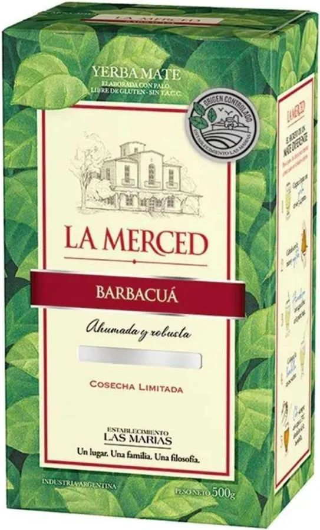
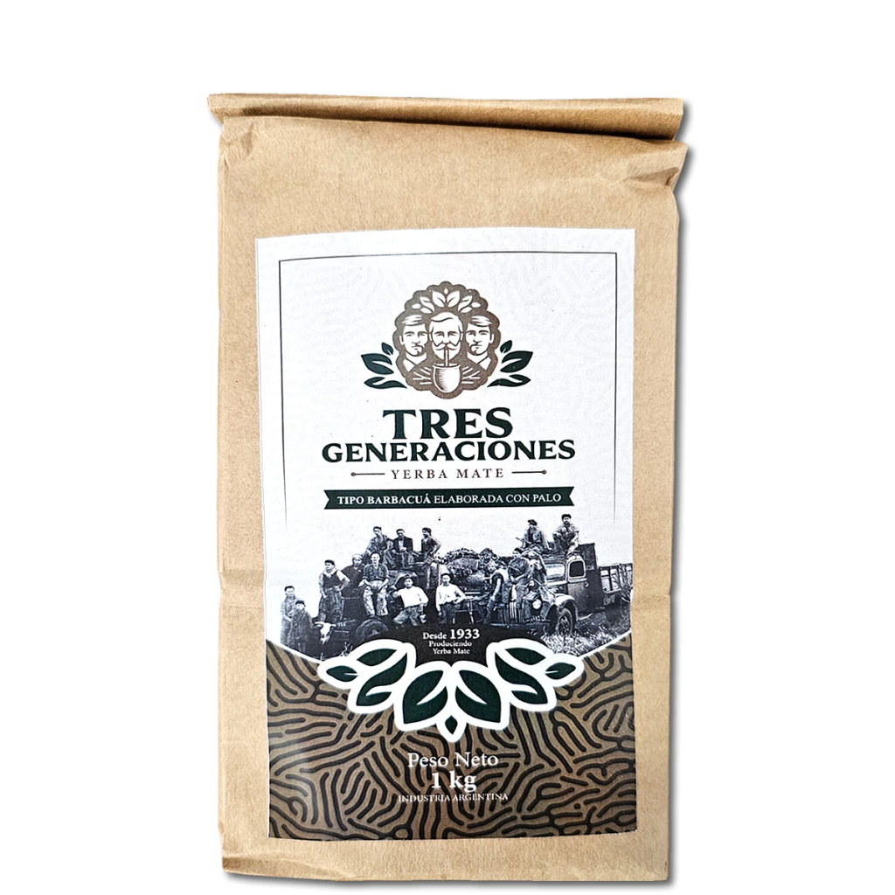
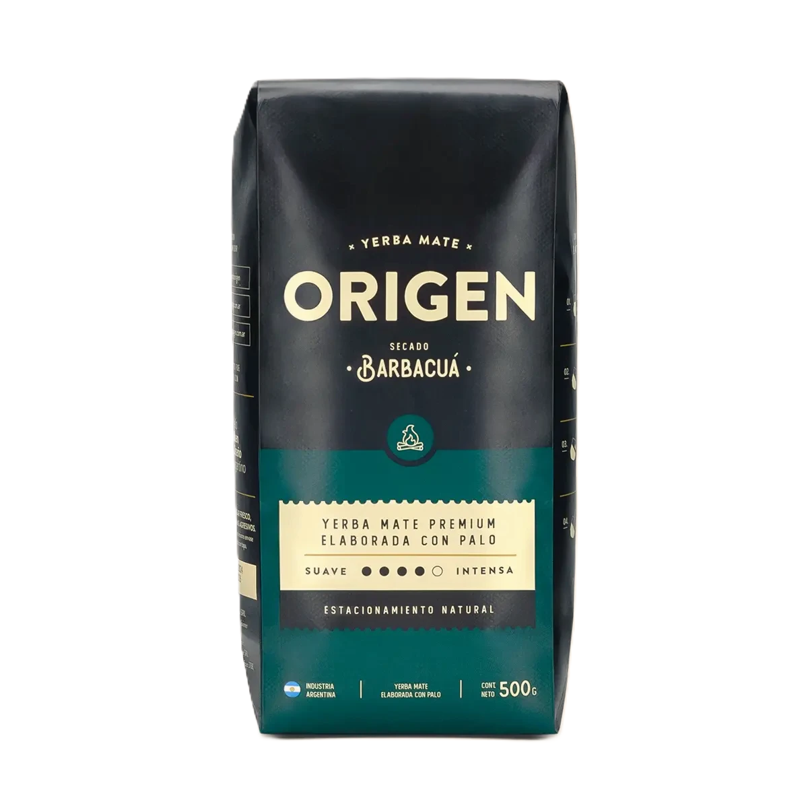
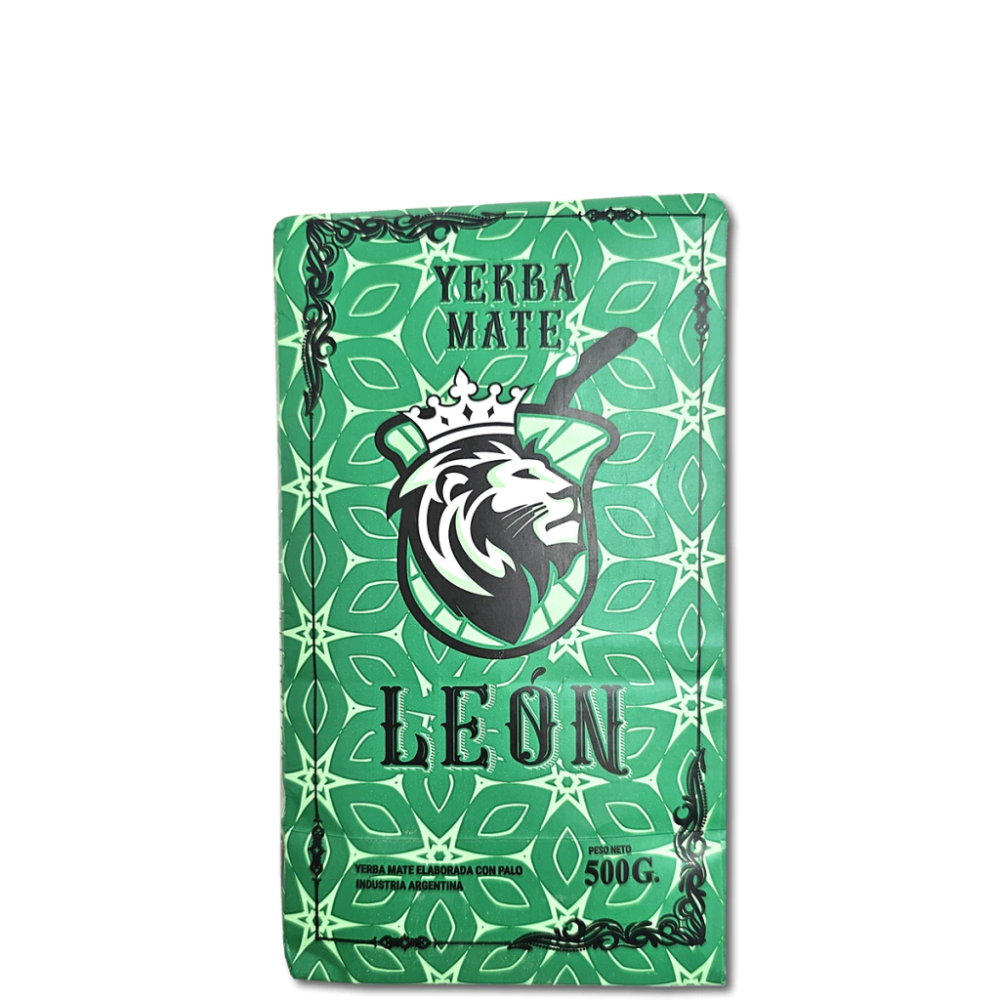
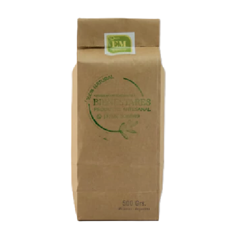
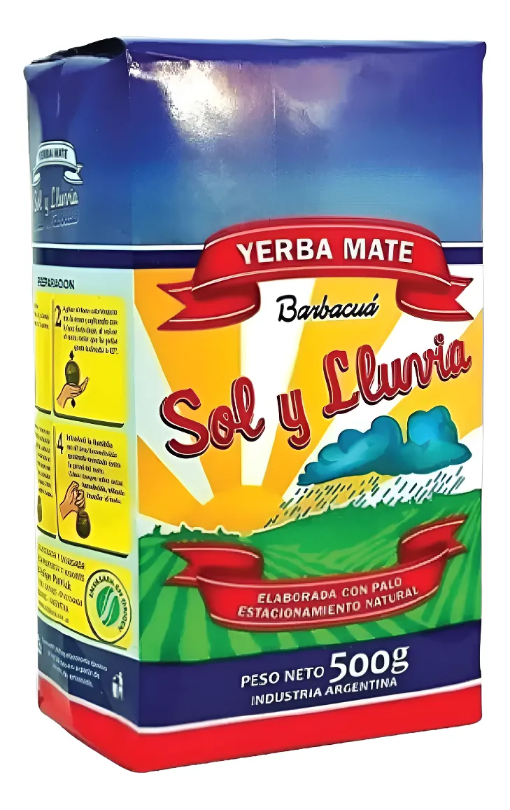
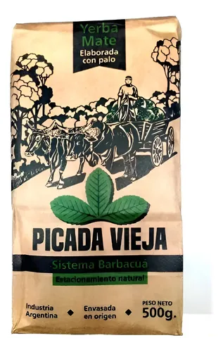

Mas intensas
Para quienes buscan un mate con caracter fuerte y definido. Estas yerbas destacan por su sabor ahumado pronunciado y un mayor amargor

Araí Barbacuá
Destacable: Sabor ahumado, inteso y persistente
Marca: Araí

Jactancia barbacuá
Destacable: Sabor robusto, ahumado refinado y profundo.
Marca: Jactancia

La merced barbacuá
Destacable: perfil fuerte, ahumado y algo astringente.
Marca: La merced
Mas suaves
Opciones equilibradas e ideales para el consumo diario sin perder la esencia del metodo guarani.

Tres generaciones barbacuá
Destacable: Ahumado suave y sabor equilibrado.
Marca: Tres Generaciones

Origen Barbacuá
Destacable: Intenso pero balanceado, con ahumado leve y amargor controlado.
Marca: Origen

León Barbacuá
Destacable: Ahumado ligero y gusto mas accesible para principiantes.
Marca: León
Aromáticas/compuestas
Combina la intensidad caracteristica del barbacuá con hierbas naturales.

Bienestares Barbacuá Anti Ácida
Destacable: Mas suave, con perfil herbal y menos acidez para consumo liviano.
Marca: Bienestares
Artesanales
Sabores mas profundos, suaves y bien integrados

Sol y Lluvia Barbacuá
Destacable: Sabor natural con ahumado equilibrado y perfil "de campo".
Marca: Sol y Lluvia

Picada Vieja Barbacuá
Destacable: Tradicional, ahumado auténtico y estilo rustico.
Marca: Picada Vieja